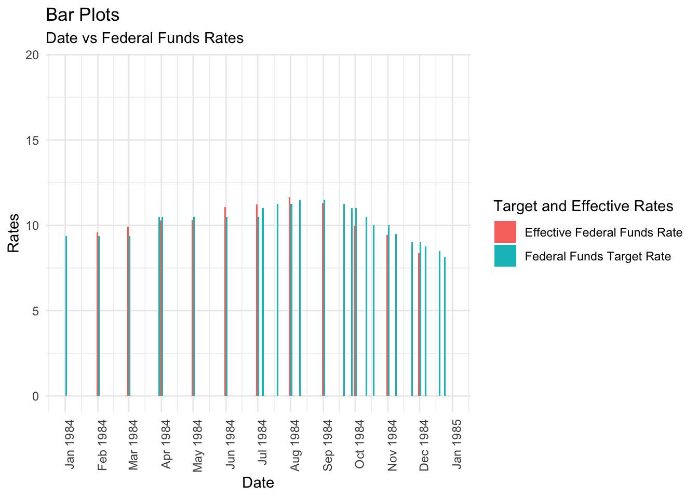

library(tidyverse)
library(ggplot2)
knitr::opts_chunk$set(echo = TRUE, warning=FALSE, message=FALSE)Challenge 6
challenge_6
Ishan Bhardwaj
fed_rate
Time and Group Relationship visualizations
Challenge Overview
Today’s challenge is to:
- read in a data set, and describe the data set using both words and any supporting information (e.g., tables, etc)
- tidy data (as needed, including sanity checks)
- mutate variables as needed (including sanity checks)
- create at least one graph including time (evolution)
- try to make them “publication” ready (optional)
- Explain why you choose the specific graph type
- Create at least one graph depicting part-whole or flow relationships
- try to make them “publication” ready (optional)
- Explain why you choose the specific graph type
R Graph Gallery is a good starting point for thinking about what information is conveyed in standard graph types, and includes example R code.
(be sure to only include the category tags for the data you use!)
Read in data
Read in one (or more) of the following datasets, using the correct R package and command.
- debt ⭐
- fed_rate ⭐⭐
- abc_poll ⭐⭐⭐
- usa_hh ⭐⭐⭐
- hotel_bookings ⭐⭐⭐⭐
- AB_NYC ⭐⭐⭐⭐⭐
fed_funds <- read_csv("_data/FedFundsRate.csv")
fed_funds# A tibble: 904 × 10
Year Month Day `Federal Funds Target Rate` `Federal Funds Upper Target`
<dbl> <dbl> <dbl> <dbl> <dbl>
1 1954 7 1 NA NA
2 1954 8 1 NA NA
3 1954 9 1 NA NA
4 1954 10 1 NA NA
5 1954 11 1 NA NA
6 1954 12 1 NA NA
7 1955 1 1 NA NA
8 1955 2 1 NA NA
9 1955 3 1 NA NA
10 1955 4 1 NA NA
# ℹ 894 more rows
# ℹ 5 more variables: `Federal Funds Lower Target` <dbl>,
# `Effective Federal Funds Rate` <dbl>, `Real GDP (Percent Change)` <dbl>,
# `Unemployment Rate` <dbl>, `Inflation Rate` <dbl>Briefly describe the data
table(select(fed_funds, "Year"))Year
1954 1955 1956 1957 1958 1959 1960 1961 1962 1963 1964 1965 1966 1967 1968 1969
6 12 12 12 12 12 12 12 12 12 12 12 12 12 12 12
1970 1971 1972 1973 1974 1975 1976 1977 1978 1979 1980 1981 1982 1983 1984 1985
12 12 12 12 12 12 12 12 12 12 12 12 16 20 25 21
1986 1987 1988 1989 1990 1991 1992 1993 1994 1995 1996 1997 1998 1999 2000 2001
19 21 24 23 17 21 15 12 18 14 13 13 15 15 15 23
2002 2003 2004 2005 2006 2007 2008 2009 2010 2011 2012 2013 2014 2015 2016 2017
13 13 17 19 16 15 19 12 12 12 12 12 12 13 13 4 normal_obsv <- filter(fed_funds, `Year` == 1955)
normal_obsv# A tibble: 12 × 10
Year Month Day `Federal Funds Target Rate` `Federal Funds Upper Target`
<dbl> <dbl> <dbl> <dbl> <dbl>
1 1955 1 1 NA NA
2 1955 2 1 NA NA
3 1955 3 1 NA NA
4 1955 4 1 NA NA
5 1955 5 1 NA NA
6 1955 6 1 NA NA
7 1955 7 1 NA NA
8 1955 8 1 NA NA
9 1955 9 1 NA NA
10 1955 10 1 NA NA
11 1955 11 1 NA NA
12 1955 12 1 NA NA
# ℹ 5 more variables: `Federal Funds Lower Target` <dbl>,
# `Effective Federal Funds Rate` <dbl>, `Real GDP (Percent Change)` <dbl>,
# `Unemployment Rate` <dbl>, `Inflation Rate` <dbl>diff_obsv <- filter(fed_funds, `Year` == 1988)
diff_obsv# A tibble: 24 × 10
Year Month Day `Federal Funds Target Rate` `Federal Funds Upper Target`
<dbl> <dbl> <dbl> <dbl> <dbl>
1 1988 1 1 6.81 NA
2 1988 1 28 6.62 NA
3 1988 2 1 6.62 NA
4 1988 2 11 6.5 NA
5 1988 3 1 6.5 NA
6 1988 3 30 6.75 NA
7 1988 4 1 6.75 NA
8 1988 5 1 6.75 NA
9 1988 5 9 7 NA
10 1988 5 25 7.25 NA
# ℹ 14 more rows
# ℹ 5 more variables: `Federal Funds Lower Target` <dbl>,
# `Effective Federal Funds Rate` <dbl>, `Real GDP (Percent Change)` <dbl>,
# `Unemployment Rate` <dbl>, `Inflation Rate` <dbl>This dataset provides federal funds rate targets with an upper and lower boundary, the actual federal funds rate for a specified year + month + day, and general economic info from 1954 to 2017. As seen from the tables, these values are usually entered on the first day of every month. In certain cases, these values are also entered either halfway through the month or at random dates. These irregular entries may hint at periods of economic fluctuation during those months.
Tidy Data (as needed)
Is your data already tidy, or is there work to be done? Be sure to anticipate your end result to provide a sanity check, and document your work here.
This dataset is not tidy because the year, month, and day are in separate columns. These are all observances of one variable: the date, and hence they should be compressed into one column. I have done this below.
Are there any variables that require mutation to be usable in your analysis stream? For example, do you need to calculate new values in order to graph them? Can string values be represented numerically? Do you need to turn any variables into factors and reorder for ease of graphics and visualization?
Document your work here.
fed_funds_tidy <- fed_funds %>%
mutate(Date = ymd(str_c(Year, Month, Day, sep="-"))) %>%
select(11, 4:10)
fed_funds_tidy# A tibble: 904 × 8
Date `Federal Funds Target Rate` `Federal Funds Upper Target`
<date> <dbl> <dbl>
1 1954-07-01 NA NA
2 1954-08-01 NA NA
3 1954-09-01 NA NA
4 1954-10-01 NA NA
5 1954-11-01 NA NA
6 1954-12-01 NA NA
7 1955-01-01 NA NA
8 1955-02-01 NA NA
9 1955-03-01 NA NA
10 1955-04-01 NA NA
# ℹ 894 more rows
# ℹ 5 more variables: `Federal Funds Lower Target` <dbl>,
# `Effective Federal Funds Rate` <dbl>, `Real GDP (Percent Change)` <dbl>,
# `Unemployment Rate` <dbl>, `Inflation Rate` <dbl>In the original dataset, the year, month, and day were in separate columns, which is incorrect. These should all be collapsed into one variable “Date”, which is what I have done. I first concatenated each year, month, and day into a string delimited by - and then used ymd() from lubridate to convert it to proper date format. These new dates were added into a new column “Date” and finally, the relevant columns were selected from the transformed dataset.
Time Dependent Visualization
ggplot(fed_funds_tidy, aes(Date)) +
geom_line(aes(y = `Effective Federal Funds Rate`, color = "EFFR")) +
geom_line(aes(y = `Unemployment Rate`, color = "Unemployment Rates")) +
scale_x_date(date_labels = "%b %Y") +
theme_minimal() +
labs(title = "Line Plots", subtitle = "Date vs Unemployment Rates and EFFR", x = "Date", y = "Unemployment Rates and EFFR")
This graph depicts the general trend of the EFFR (Effective Federal Funds Rate) and unemployment rate from 1954 to 2017. This is an important relationship to consider because we can get insights as to how EFFR has affected unemployment and vice-versa historically. This could be used to make predictions about both in the future if a relationship between them is found. As we can see from the plots, although the EFFR shows more dramatic spikes than the unemployment rate, it is usually observed that as the unemployment peaks, the EFFR peaks as well. The maximas of these plots are both observed at the start of the 1980-1990 decade. These similar trends hint at a correlation between these variables. I chose line plots for this visualization because I can easily see rate fluctuations, peaks, and dips.
Visualizing Part-Whole Relationships
compress_rates <- fed_funds_tidy %>%
select(1, 2, 5) %>%
pivot_longer(2:3, names_to = "Target and Effective Rates", values_to = "Rate")
compress_rates# A tibble: 1,808 × 3
Date `Target and Effective Rates` Rate
<date> <chr> <dbl>
1 1954-07-01 Federal Funds Target Rate NA
2 1954-07-01 Effective Federal Funds Rate 0.8
3 1954-08-01 Federal Funds Target Rate NA
4 1954-08-01 Effective Federal Funds Rate 1.22
5 1954-09-01 Federal Funds Target Rate NA
6 1954-09-01 Effective Federal Funds Rate 1.06
7 1954-10-01 Federal Funds Target Rate NA
8 1954-10-01 Effective Federal Funds Rate 0.85
9 1954-11-01 Federal Funds Target Rate NA
10 1954-11-01 Effective Federal Funds Rate 0.83
# ℹ 1,798 more rowsFor this analysis, the groups we are trying to locate relationships between are the EFFR and target rates, so I have compressed them into one column.
ggplot(compress_rates, aes(x = Date, y = Rate, fill = `Target and Effective Rates`)) +
geom_bar(position="dodge", stat="identity", width = 3.0) +
scale_x_date(date_labels = "%b %Y", limits = as.Date(c("1984-01-01", "1984-12-31")), date_breaks = "1 month") +
theme_minimal() +
theme(axis.text.x=element_text(angle=90, hjust=1)) +
labs(title = "Bar Plots", subtitle = "Date vs Federal Funds Rates", x = "Date", y = "Rates")
Since we know that there was a major EFFR spike at the start of the 1980-1990 decade, we can do a group analysis of the target rates and the EFFR to see if there were any major differences between them during this period. I have chosen the year 1984 as a sample, and contrary to what I expected, the target rates and EFFR remain relatively similar throughout the whole year. However, in the second half of this year, there are more frequent changes to these rates, which could hint at increased economic fluctuation during this time. I chose a grouped bar chart for this visualization because I can easily note rate differences by observing the heights of different groups.